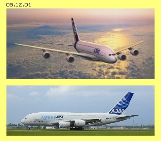
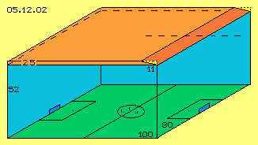
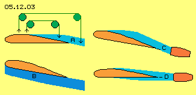
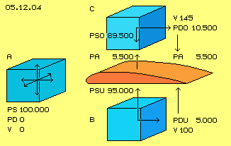

(Mis-) Calculations
At chapter 05.04. ´Lift at Wings´ I described the process of lift and made some calculations. As I don´t like that ´formula-caboodle´ I asked specialists to check these calculations. Past eight weeks that chapter was visited three thousand times and downloaded one thousand times. However I got no hint for mistakes, critic discussions came up only with some readers. ´Naturally´ my calculations were wrong and the formula were used most fuzzy. At the following I will show a most clear and simple procedure of calculation and correct results.
|
 |
| Span |
80 m |
| Length / Height |
73 m / 24 m |
| Wing-Surface |
850 m^2 |
| Start-Weight |
560.000 - 590.000 kg |
| Payload |
83.000 - 152.000 kg |
| Fuel-Litre / -Weight |
310.000 L / 270.000 kg |
| Range |
10.000 - 15.000 km |
| Passengers |
500 - 850 |
| Freight-Volume |
1.000 m^3 |
| Optimum Speed |
0,85 Mach |
| Start- / Landing Speed |
270 km/h |
| Thrust (Start) |
310 - 340 kN |
| Noise Level |
100 dB |
One physician did not examine my calculations however offered hints concerning formula and common opinion. At his institute of an high-ranking university, they teach the theory of common understanding: the lifting of a plane is achieved by pushing down the corresponding mass of air. He proved this conviction with data of the new A380. So at the following are mentioned some figures of that impressive plane (some values rounded).
Data of A380
Eighty meters wide is that bird, eight 100-m^2-flats could be arranged at the surface of the wings, it weights as much as three hundred well build cars, each occupied with two or three passengers corresponds to its capacity. Like at land-vehicles, the payload is relative small, only one seventh or a quarter at pure freight version. That machine primary is a tanker lorry - the demanded fuel takes the half of the start weight.
More than 300.000 N thrust accelerate that airplane, which flies over a quarter of the globe at a half of day by 850 km/h. It´s most expensive to move seven times faster than a car. Each passenger ´consumes´ as much fuel as cars need (even there are four persons within car). Who believes it´s important coming to far continents within few hours, won´t bother about the noise level of 100 dB.
Flying by itself is great, that A380 by itself is a technical master piece - however it makes no sense for me. Nevertheless ´normal´ people seem not bothered by that stress and don´t suffer when ´flying off their souls´ and need days to ´find back to themselves´. However that´s not the subject here, because here are discussed only physical data and facts.
Classic Calculating
Previous highly qualified specialist made the following assumptions: mass m = 500 t (so 500.000 kg), wing face S = 850 m^2, speed v = 100 m/s (so 360 km/h), density of air rho = 1 kg/m^3. Resulting is demanded force of lift A = m * g = 4.905.000 N. By classic formula for lift A = 0,5 * rho * v^2 * S * Ca results the lift-factor Ca = 1,15. By the data of the wing further results the demanded angles of attack alpha = 13,3 degrees. Again results the induced resistance W = 237.600 N, demanding 32.300 HP for breaking the resistance of this speed. Indeed, these results are calculated correct.
That expert now takes the view of common understanding, the performance for producing of downward-wind corresponds to the force necessary for lifting the airplane (based on the classic-mechanic reliable principle of actio = reactio). Based on the angle of attack it´s easy to calculate, the wings have to push down air by about 24 m/s. Only the air direct below of the wing is accelerated that fast. The air some more below is accelerated less. So this expert assumes the average speed of downward-wind to be some 12 m/s.
Based on the constant of impulses - the airplane is affected by an upward-impulse corresponding to the downward-impulse of air - demanded downward speed needs the movement of mass m = 415 t/s (some less than the weight of airplane, because the air is moved down some faster than by gravity g). The acceleration of that air-mass-flow requires the performance of about 39.400 HP - and also that´s determined by the rules of physics absolutely correct and accepted as general understanding.
Not to grasp

Verbal statements I made at diverse texts, now are covered by real data and I say thanks for that service. However I still am astonished, how such results - obviously theoretic correctly determined - are not checked with obvious realities. By previous calculations the wing must push down air in extent of 415 t/s. These are 415.000 kg and by previous density rho = 1 kg/m^3 each kilogram corresponds with one cubic-meter. So an air-volume of 415.000 m^3 should be accelerated downward by about 12 m/s.
At picture 05.12.02 schematic is sketched that volume. The A380 shows a span width of 80 m and at previous example, the plane flies by 100 m/s, so within one second covers most exactly a football pitch (green). Previous volume results if a 18-floor-building (blue walls) is constructed at the total area, with a height of 52 m. The goals like the players at middle circle are drawn true to scale.
Upside right at this picture, also true to scale, the wing (dark red) with its surface of 850 m^2 is drawn, so with 80 m span width and about 11 m length. The wing is drawn diagonal corresponding to previous angle of attack (yellow), where the wing grasps a layer of air (light red) of maximum 2,5 m height. The airplane moves the length of wing within about one tenth of a second, pressing down a volume of 80 * 11 * 2.5 = 2.200 m^3 air downwards by the demanded acceleration. However, the wing should push down also the remaining air below of, so these 80 * 11 * 49,5 = 43.500 m^3, within that tenth of a second, down these 2,5 m. During one second, the whole volume of that ´church-tower-high-pitch-super-structure´ completely must be pushed down by the speed of 12 m/s. That´s absolutely impossible in reality.
Previous calculations are correct - however, here the air is handled like a solid body, where an impulse onto a (part-) surface immediately affects on the total mass of that body. The air however is not to grasp likely, it transmits a pressure not pure mechanically, but the air is compressible and escapes immediately into areas of less pressure, by sound speed, without affecting corresponding (mechanic) counter-pressure. That wing here just reaches not enough volume of air in order to produce downward winds in the extent demanded by that mechanical impulse-constant.
Clutch at Straws
This mechanistic point of view includes also - the wide spread - opinion, also the air upside of the wing is drawn down and also behind the wing goes on that downward motion of air - so it´s suspected the airplane correspondingly would move upward. At picture 05.12.03 at A likely naive is sketched: there are no ´green redirection-wheels´ hanging at heaven, balancing weights and forces.
There is no possibility to move down that volume of air demanded for lift. At most would be possible to compress some air by corresponding energy-input and to push up the plane upon an ´air-cushion´ B, again with corresponding mechanical energy-input. As long as the plane rolls on the ground or flies near the ground, some counter-pressure might exists. Downward- resp. compression-pressure spreads by sound speed down, however the counter-pressure returns only by half of sound speed. Flying the length of that wing (previous 11 m) takes one tenth of a second. Within that time-unit, the counter-pressure wanders some 15 m, so it´s missing the wing already by slow speed resp. few height.
So within free space or at normal travel-speed, the wing is affected only by an upward-pressure resulting of the air-layer directly grasped by the wing, so here only that layer of maximum 2,5 m height, the twentieth part of necessary air masses. In addition, that pressure naturally flows off aside and downside and backwards. Thus a continuous energy-input is necessary, which continuously gets lost for the system (like e.g. the energy invested in the bow-wave of ships spreads into ´infinity´).

Too less / too much Lift
For high or the travel-speed, the wings must show a rather flat profile in order to produce sufficient lift and same time showing most less resistance. For slow or start speed, the profiles must show stronger bending resp. at rear end of the wings additional surfaces are extended. Nevertheless the ´natural´ lift is not sufficient for airplanes with full fuel tanks. After the take-off, the plane is steep inclined, so previous wedge-shaped air-cushion of high density comes up. Mechanical pushing-up upon that wedge is no original lift, but pure mechanical trust at an inclined face.
Like discussed at later chapter the engines should suck-off the air upside of the wing and should not be arranged below of wings, like common practise and also at previous A380. The dilemma however is, these engines would produce much too strong lift at high speed travel. Thus the engines should be installed behind of the wings (at C). If strong lift is demanded, the air is taken only from the upper side, controlled by flaps. At normal flight or few demand for lift, the air by parts could come from below of the wing (at D) - or the airplanes should be designed like described at later chapter by a New-Technology.
Artificial Wind
Now however back to the data of A380-plane and the calculation of ´natural´ lift, i.e. only these lift-forces based on the wing-profile by itself, resulting of normal molecular movement energy (plus some drive energy for balancing the resistance). Starting point are previous data: mass m = 500 t = 500.000 kg resp. 5.000.000 N, surface of wing S = 850 m^2, speed v = 360 km/h = 100 m/s and density of air rho = 1 kg/m^3. Each square-meter of the effecting wing face thus must contribute the lift force A = 5.000.000 / 850 = 5.882 N/m^2.
At chapter ´Lift at Wings´, based on the movements of observed air particles and resulting suction effects, I found a flow of 45 m/s relative to the wing at its upper side, as an average. That value could also be some higher because there was calculated without the optimum angle of attack (about 3 degree, for compensation of the air flowing from below upward over the nose). In addition, the calculations there assumed a sound speed only with 300 m/s (instead of usual 330 m/s). The speed of these ´artificial winds´ about 45 to 50 m/s could be valid in general, so also for the A380. So here is assumed, the air below of the wing moves along by 100 m/s, the air at the upper side however are flowing by 145 m/s relative to the wing.
Real Lift

Picture 05.12.04 visualizes following mode of calculation. Each blue cube represents one cubic-metre of air. At A this air is resting (V 0), the normal atmospheric pressure of 1 bar exists respective likely static pressure PS = 100.000 N/m^2 into any direction. This ´resting´ cubic-metre of air shows no dynamic pressure (PD 0).
Below of the wing (red) at B is drawn a corresponding air mass, moving relative to the wing by 100 m/s (V 100). This air shows dynamic pressure (flow-pressure, dam-up-pressure) at its right side (darker blue), corresponding to known formula PD = 0.5 * rho * v^2. So the flow-pressure at this downside face of the wing is PDU = 0.5 * 1 * 100^2 = 5.000 N/m^2. As the sum of all pressures is constant, towards the below surface of the wing affects a reduced static pressure PSU = 100.000 - 5.000 = 95.000 N/m^2 (light blue).
The analogue mode of calculation is used at the upper side of the wing (at C), there with some faster relative speed of 145 m/s (V 145). Resulting is a dynamic pressure PDO = 0.5 * 1 * 145^2 = 10.500 N/m^2 and corresponding the static pressure PSO = 100.000 - 10.500 = 89.500 N/m^2. The difference of both static pressures is the lift-force PA = 95.000 - 89.500 = 5.500 N/m^2. Based on the mutual dependence of pressures, this value also results directly as difference of both dynamic pressures). This lift-force of 5.500 N/m^2 is rather likely to the necessary lift of 5.882 N/m^2, like determined upside (especially as the ´artificial wind´ of 45 m/s is assumed a little bit too slow. E.g. 50 m/s would result a lift-force of 6.325 N/m^2, so some more than necessary for the horizontal flight).
The formalism becomes really simple if based only at the undisputed fact of the constant of dynamic and static pressures. Downward-winds and mechanistic actio=reactio not at all are involved, only the difference of static pressures raises an airplanes. This formula is also valid, if not only that ´natural´ lift is used, but the plane is pushed up by steep angle of attack. The air becomes dammed-up below of the wing and pushed forward, so that air becomes compressed. If the higher density and the slower relative speed are used, that formula will result the demanded, increased lift-force for the climbing-flight.
By the way: naturally comes up the downward flow behind the wings, started by the suction area upside of the wing - as a consequence and never ever as reason for lift! At the other hand: if the angle of attack is too steep, the flow at the upper side becomes turbulent. As soon as the suction there collapses, all lift-forces collapse too. So that pushing-downward of air, by itself never can result sufficient lift-forces. The ´natural´ lift comes up only by the pressure-differences and demands only few energy-input, while the ´artificial´ lift of a plane by mechanic pressing-up demands huge energy-input and still is only available in addition to the profile-based natural lift.
Correction
Some critics mentioned, these ´Bernoulli-rules´ would be valid only for incompressible fluids, thus would be usable for air only conditionally. At the other hand, the ´energy-constant-rule´ is valid and any particles movement all times can affect completely ahead or completely aside or diagonal with according components. No matter whether the particle is ´resting´ or moving, it´s affecting pressure to all directions likely - or the ´static´ pressure by parts is directed into the flow direction. So in total the pressure-constant well is a constant fact, also within the air.
However the common formula do not pay attention to the fact, a flow initiated by suction is well ordered, its particles fly nearby each other rather parallel, so affecting ´excessive´ dynamic pressure. The ordered flow along a surface protects it better against atmospheric pressure as any flow produced by pressure. Common theories don´t mind that grave difference. So previous general calculation with the pressure constant is not more wrong than paying no attention to specific suction effects.
At chapter 05.04. ´Lift at Wings´ an example of an airplane was mentioned with these data: wing surface 48 m^2, speed 150 m/s (half sound speed), additional flow at upper side 45 m/s (so the air passes the wing upside by 195 m/s). By previous mode of calculation thus results the dynamic pressure at the below surface PDU = 0.5 * 1 * 150^2 = 11.250 N/m^2 and at the upside surface PDO = 0.5 * 1 * 195^2 = 19.012 N/m^2. The difference is PA = 19.012 - 11.250 = 7.762 N/m^2. The lift of the total surface thus is PA = 7.762 * 48 = 372.576 N. That´s sufficient for plane of about 37 t, instead of 20 t by calculation more wrong than right at previous chapter). The following table shows these data at first row, below are shown the data of some further situations (Remark: U means German ´unten´ = below, O = ´oben´ = upside).
| Situation |
VU | VO | PDU | PDO | PA |
1. Example
05.04. | 150 | 195 | 11.250 | 19.012 | 7.762 |
2. A380
Start | 100 | 145 |
5.000 | 10.500 | 5.500 |
3. A380
Climbing | 200 | 250 |
20.000 | 31.250 | 11.250 |
4. A380
Optimum | 280 | 330 |
39.200 | 54.450 | 15.250 |
5. A380
Power | 300 | 330 | 45.000 | 54.450 | 9.450 |
6. A380
Limit | 320 | 330 | 51.200 | 54.450 | 3.250 |
A380 - Data
Second row of table shows data for lift of A380 with speed VU = 100 m/s, short time after start or at begin of climbing flight (analogue previous picture 05.12.04). At upper surface exists additional ´wind´ of 45 m/s, so VO = 145 m/s is assumed.
The dynamic pressure at the below face is PDU = 0.5 * 1 * 100^2 = 5.000 N/m^2 and at the upper face PDO = 0.5 * 1 * 145^2 = 10.500 N/m^2. The difference is the lift PA = 5.500 N/m^2. Upside were named 5.882 N/m^2 as the demanded lift. So at that speed, the generated lift-force nearby is able to keep the plane at its height. However, for raising up to higher level, still an additional thrust is necessary for pushing up the plane by steep angle.
The third row of that table shows the data of further acceleration of the A380, e.g. at 200 m/s and at the upper surface now some increased flow of additional 50 m/s. Resulting is an essential stronger lift PA = 11.250 N/m^2. So short time after the first climbing phase, the speed and lift-force is strong enough for further raise. Much less energy-input is demanded at this phase of the flight.
Row 4: the optimum speed of the A380 is stated with 0,85 Mach, which means VU = 280 m/s, if the sound speed is assumed with 330 m/s. Suction can not work faster than speed, so the air moves along the upper surface by its maximum speed VO = 330 m/s. That speed some below of sound-velocity is most economic for many airplanes and thus I expect, the remaining 0,15 Mach resp. about 50 m/s are the maximum speed of additional flow, which can be generated by suction at the upper surface of wings. At this border of 0,85 Mach, the A380 achieves its maximum lift PA = 15.250 N/m^2. That´s much too strong lift for conditions near the ground, however just enough at the level of 10 km height and its low density rho = 0,4 kg/m^3 up there. So the lift of PA = 15.250 * 0.4 = 6.100 N/m^2 is just right for the fast horizontal flight.
Row 5 shows the situation where the plane ´powers´ high speed of VU = 300 m/s. However that maximum VO = 330 m/s decreases the lift PA = 9.450 N/m^2 dramatically. At high level and low density, the PA = 9.450 * 0.4 = 3.780 N/m^2 would be too week, i.e. the airplane can hold that height only by mechanic pushing-upward. So that speed is no longer economic for travel-flight.
Row 6 marks the approach to the limit, as the speed of VU = 320 m/s produces only a lift of PA = 3.250 N/m^2, so tending to zero, especially at great height. It´s commonly not known, however a most clear fact: beyond sound-speed no longer exists a ´natural lift´ at wings, but the jet planes must be pushed by extensive power.
Result
Based on the data of A380-plane, that common theory of ´lifting-plane-mass by lowering-air-mass´ is disprove without any doubt. At its best only a ´mechanical pushing-upward upon a compressed air-cushion´ is possible - however only in addition to the ´original lift´. These natural lift-forces exclusively come up by suction-effect at upside surfaces, because generated flow affects less static pressure against upper sides. At the below face exists relative slow movement and thus nearby the whole atmospheric pressure of resting air affects the upward lifting of the plane. This original lift at wings demands few energy-input, only to overcome the small Cw-resistance.
Opposite, the mechanic pushing-upward involves heavy losses. The main part of fuel is consumed at the short start-phace. At the other hand, beyond sound-speed no longer exists that lift-by-profile, so the pushing-up is continuously necessary with corresponding high consumption of fuel.
So one must leave the (´impossible´) idea, one must push down air for lifting planes. It´s only necessary to organize suitable flows and quite new conceptions can be realized. All common considerations mostly are fixed on utilization of pressure and they totally ignore the enormous potential of normal molecular movement, easy to use, however only by application of suction.
The sciences finally must leave the wrong understanding of limitations by the energy constant and the sciences of flows must consider specific differences between fluid- and solid-body-mechanics. If facts here described are integrated, real products can be build much more effective - and even flying could occur environmentally neutral.
File www.evert.de/ap0512e.pdf is a print version.